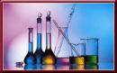

Science

Solar System
The Solar System consists of the Sun and the other celestial objects gravitationally bound to it: the eight planets, their 166 known moons, three dwarf planets (Ceres, Pluto, and Eris and their four known moons), and billions of small bodies. This last category includes asteroids, Kuiper belt objects, comets, meteoroids, and interplanetary dust.
In broad terms, the charted regions of the Solar System consist of the Sun, four terrestrial inner planets, an asteroid belt composed of small rocky bodies, four gas giant outer planets, and a second belt, the Kuiper belt, composed of icy objects. Beyond the Kuiper belt is the scattered disc, the heliopause, and ultimately the hypothetical Oort cloud.
Generalist and Specialist Species
A generalist species is able to thrive in a wide variety of environmental conditions and can make use of a variety of different resources (for example, a heterotroph with a varied diet). Specialist species can only thrive in a narrow range of environmental conditions and/or have a limited diet. Organisms do not fit neatly into either group, however. Some species are highly specialized, others less so, while some can tolerate many different environments. In other words, there is a continuum from highly specialized to broadly generalist species.
Omnivores, which eat both plants and animals, are usually generalists. Herbivores are often specialists, but those that eat a variety of plants may be considered generalists. A well-known example of a specialist animal is the koala which subsists almost entirely on eucalyptus leaves. The raccoon is a generalist because it has a natural range that includes most of North and Central America, and it is omnivorous, eating berries, insects, eggs and small animals.
Electricity
Electricity is a general term that encompasses a variety of phenomena resulting from the presence and flow of electric charge. These include many easily recognisable phenomena such as lightning and static electricity, but in addition, less familiar concepts such as the electromagnetic field and electromagnetic induction.
Hydrosphere
A hydrosphere in physical geography describes the collective mass of water found on, under, and over the surface of a planet. The Earth's hydrosphere consists of water in all forms: the ocean (which is the bulk of the hydrosphere), other surface waters including inland seas, lakes, and rivers; rain; underground water; ice (as in glaciers and snow); and atmospheric water vapor (as in clouds).
Biome
A biome is a climatically and geographically defined area of ecologically similar communities of plants, animals, and soil organisms, often referred to as ecosystems. Biomes are defined based on factors such as plant structures (such as trees, shrubs, and grasses), leaf types (such as broadleaf and needleleaf), plant spacing (forest, woodland, savanna), and climate. Unlike ecozones, biomes are not defined by genetic, taxonomic, or historical similarities. Biomes are often identified with particular patterns of ecological succession and climax vegetation.
The biodiversity characteristic of each biome, especially the diversity of fauna and subdominant plant forms, is a function of abiotic factors and the biomass productivity of the dominant vegetation. Species diversity tends to be higher in terrestrial biomes with higher net primary productivity, moisture availability, and temperature.
Back